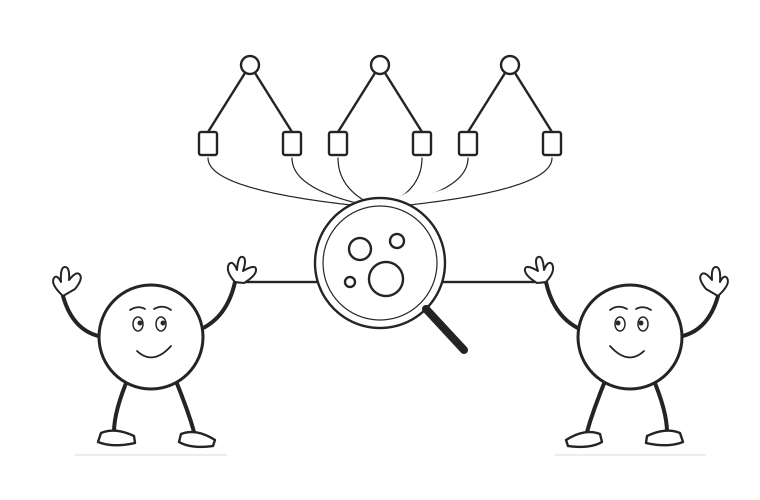

07 / Causal machine learning
Causal forests
Learn a neighborhood. Estimate its local effect.
Follow honest tree leaves into forest weights, then use those weights to estimate a conditional treatment effect.
Scroll to begin
Start with heterogeneous effects of political information. Residualize, split, build neighborhoods, and distinguish local estimation from evaluation and inference.
The forest chooses neighbors.
The moment identifies the effect.
A causal forest combines effect-directed partitions, honest estimation, and local causal comparisons. Its predictions describe conditional average effects. Identification, nuisance estimation, neighborhood bias, evaluation, and sampling uncertainty each remain part of the argument.
Read the complete explanation, calculations, and assumptions ↗
Sources and further reading
- Wager and Athey (2018). Estimation and inference of heterogeneous treatment effects using random forests.
- Athey, Tibshirani, and Wager (2019). Generalized random forests.
- Athey and Imbens (2016). Recursive partitioning for heterogeneous causal effects.
- Nie and Wager (2021). Quasi-oracle estimation of heterogeneous treatment effects.
All numerical examples are constructed. There are 240 observations in 15 covariate cells, with known nuisance functions and balanced outcome noise. Three explicitly specified partitions illustrate forest-weight arithmetic; they are not a trained production forest. The split comparison is an actual gradient calculation. Honesty and evaluation diagrams describe data flow. No research confidence intervals are reported. The estimator shown is the residualized, local-moment version of a causal forest in the generalized random forest framework.